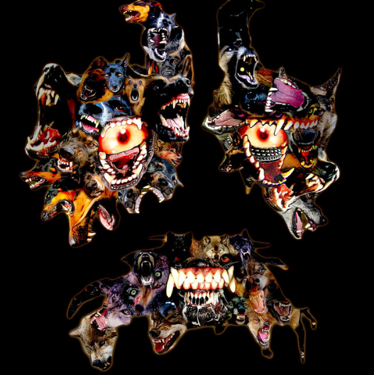
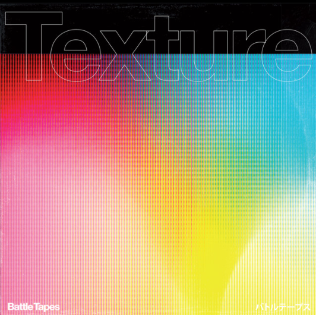
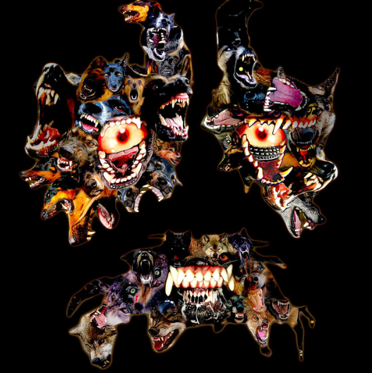
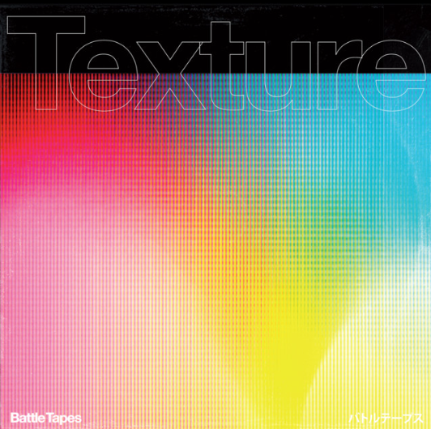
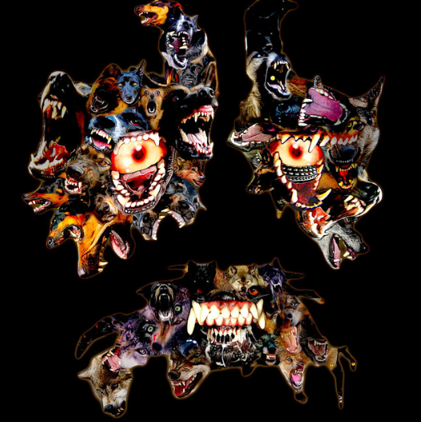
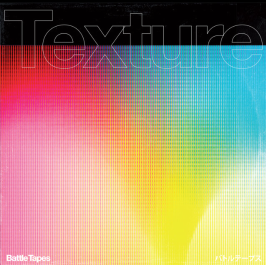

As I said in the intro, I listen to everything. My favorite genres move around a lot, though; I call them “phases.” The current phase I'm in is the “EBM and Digital Hardcore phase.” The phase before this one was the “Pop and Breakcore phase.”
My introduction to music was through my grandpa. He listens to classic rock, so I listened to classic rock. My favorite classic rock artists are Journey, America, The Beatles, and Soundgarden. My music taste then soon shifted because of my mother. She listened to electronic, alternative rock, metal, and EBM. Some of the artists I listened to then were Mr. Kitty, Rammstein, And One, and Apoptygma Berzerk. The music I listen to now is much heavier than what I used to listen to. Artists like Machine Girl, Pixel Grip, ZOMB, awerewa, LustSickPuppy, and multiple others. Machine Girl is definitely my favorite artist right now.
My Spotify Profile:My Spotify
I have lots of favorites, I've been working on a playlist on Spotify called "One of Everything." The playlist is a favorite song in every genre I listen to.
My current favorite artists are Machine Girl and Battle Tapes; some of my favorite songs from them: Machine Girl: Ignore the Vore, Kill Screen, Necro Culture Vulture, Black Glass, and Come on Baby Scrape my Data. Battle Tapes: Valkyrie, If Only, Back in the Game, and Solid Gold.
My taste in songs is taking another sudden turn from my sister using my Spotify account. My sister listens to more grungy music groups like Deftones and Nirvana. I've never been a real fan of Nirvana only a couple of songs I find alright, but Deftones I've never really thought I would enjoy. I've had the song Savory on repeat.

